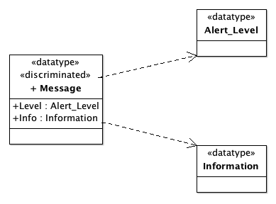

ColdFrame: Types
Motivation
Clearly a class corresponds, in a programming language sense, to a
type. In Ada, you'll see statements like
type My_Class is ...
The distinction that ColdFrame makes between type and
class is that classes have instances, each instance being
distinct from any other instance, while types merely have values, and
you can have many different identical values of the same type.
Modelling
With ArgoUML, a data type needs to be defined before you use it as
the type of an Attribute or Parameter. It's often
quickest to enter the name and type straight onto the class diagram,
but be careful; if you do this and the name of the type isn't an exact
match (including capitalization and the use of underscores), ArgoUML
invents a new Class with the mistaken name (so you can have the
fun of deleting it).
ColdFrame-specific types are declared in
the profile.
Under some circumstances, you may need to use the name of
a Class in the domain (for example,
to formalize an
association).
Because ArgoUML allows DataTypes to have attributes but
doesn't show them on the class diagram, ColdFrame requires you to
model types with attributes as ArgoUML Classes with the
stereotype «datatype».
Other types are modelled in DataTypes or Enumerations
(or Exceptions, but
beware: ArgoUML
displays these as Signals).
You can specify the visibility of a type in
the Visibility section of the ArgoUML Properties
dialog.
Stereotypes that apply to DataTypes only
- «access»
- specifies that you need a type which provides access to objects of
another type (ie, a pointer type).
Specify the target type name using the {access-to-type}
tag. It can't be one of
the types that ColdFrame
defines (such as Integer).
It's probably a good idea to adopt a naming convention:
ColdFrame's precedent would be to append
_P to the target type name, your project might prefer
something more like _Access.
So, if you've created a «datatype» Foo, and you
want pointers to Foos, tag «access» Foo
P as {access-to-type=Foo}.
- «access-to-operation»
- Implementation may require you to create a type which represents
an access to an operation of a particular profile. As noted above,
ArgoUML requires that you represent this using something that it
recognises as a type.
To work round this problem, create a DataType and apply
this stereotype. ColdFrame then requires you to provide a single
operation, whose name doesn't matter (though you will be warned if
it's not the same as the name of the data type).
- «bounded-string»
- is used with the associated {length} tag to specify a
string of up to the maximum length specified.
- «constraint»
- is used to define a constrained version of a parent scalar
type. The type to be constrained is specified using
the {constrains} tag; there are no ColdFrame-imposed
restrictions, so you can for example constrain Long_Float.
The new lower bound is specified via the {lower} tag, and
the new upper bound via {upper}. At least one of these tags
must be supplied; if either is omitted, the corresponding bound of the
parent type is used.
- «counterpart»
- is used for references to instances in other domains.
- «fixed-string»
- is used with the associated {length} tag to specify a
string of the length specified.
- «imported»
- specifies that the given type is to be found at the external
reference specified in the associated {imported} tag.
The {hash=style} tag specifies
how an imported or renamed type is to be hashed. Currently the only
supported styles are
- discrete, which will work for imported enumerations or
integer ranges but not for private or access types, and
- enumeration, which is similar but acts as a code
generation optimization directive.
- «null»
- specifies an empty record; useful for a callback with no actual
data associated.
- «renaming»
- specifies that the given type or exception renames the external
reference specified in the associated {renames} tag.
The {hash=style} tag is available
as for «imported» above.
- «unsigned»
- specifies that the given type is to hold unsigned numbers with
modulus as specified in the associated {mod} tag.
Stereotypes that apply to «datatype» Classes only
- «discriminated»
- causes the generation of discriminated records; the discriminant
is an enumeration type with literals formed from the attribute names
with _T appended.
- «protected»
- specifies that instances of the type are protected against
concurrent access by multiple threads of execution.
Stereotypes that apply to either kind of data type
- «callback»
- specifies that callback support code
is to be generated. The idea here is that a (lower-level) Domain may
need to support Observers from higher-level Domains, and the
higher-level Domains can register to be notified when something has
changed in the lower-level Domain.
Others
- «convention»
- specifies that the conventions of the programming language
specified in the associated {language} tag (typically C) are
to be used.
Can be applied to enumerations and «datatype» Classes.
Operations
Types can have operations.
In the case of protected types, operations (without return
values) can be stereotyped «entry», with Ada
semantics.
Translation
Types defined in
the profile are translated
as defined there.
References to the current class are translated as Handle.
References to any other class in the domain are translated
as ColdFrame.Instances.Handle.
New types are declared in the domain package, in the private part
if they were marked private or package in the
model. Where appropriate, supporting code is generated as a child unit
of the domain package.
Operations of types are generated in the domain package. They have
no implicit This parameter.
- «access» Foo and {access-to-type=Bar}
- after the declaration of Bar,
generates
type Foo is access all Bar;
for Foo'Storage_Size use 0;
Any instances of Bar are declared aliased, to
allow 'Access to be used.
- «access-to-operation» Foo_P
- after the declaration of all types in the public or private part
of the domain package spec (depending on the visibility of the
stereotyped DataType), generates
type Foo_P is access procedure
(parameters);
- «bounded-string» and {length=79}
- gives an instantiation of
Ada.Strings.Bounded's Generic_Bounded_Length; for
example (see below),
with Ada.Strings.Bounded; use Ada.Strings.Bounded;
package Domain is
package Information_Package is
new Generic_Bounded_Length (Max => 79);
subtype Information is Information_Package.Bounded_String;
use type Information;
and a library-level hash function
with ColdFrame.Hash.Strings.Bounded;
function Domain.Information_Hash
is new ColdFrame.Hash.Strings.Bounded (Information_Package);
- «callback» Foo
- the
generated code is an instantiation of ColdFrame.Callbacks:
with ColdFrame.Callbacks;
package Domain.Foo_Callback
is new ColdFrame.Callbacks
(T => Domain.Foo);
- «counterpart» Foo_Handle
- gives
with ColdFrame.Instances;
..
subtype Foo_Handle is ColdFrame.Instances.Handle;
- «convention» T and {language=lang}
- gives
pragma Convention (T, lang);
- «discriminated»
- Given a model fragment as in the picture

ColdFrame generates
type Message_Discriminant is
(Info_T,
Level_T);
type Message
(Discriminant : Message_Discriminant
:= Message_Discriminant'First)
is record
case Discriminant is
when Info_T =>
Info : Information;
when Level_T =>
Level : Alert_Level;
end case;
end record;
- «fixed-string» T and {length=length}
- gives a subtype of the
standard String of the specified length:
subtype T is String (1 .. length);
- «imported» T and {imported=external-reference}
- gives
with external-reference;
..
subtype T is external-reference.T;
use type T;
(clearly external-reference needs to correspond to a
with-able package name).
- «null» T
- generates type T is null record;
- «protected»
- generates a protected type in the domain
package. Operations of the type map to protected operations; procedure
operations stereotyped «entry» map to protected entries.
The protected type's body is generated as a separate body;
the operations raise Unimplemented if called.
- «renaming» T and {renames=external-type}
- If the external-type is Ada.Real_Time.Time, gives
with Ada.Real_Time;
..
subtype T is Ada.Real_Time.Time;
use type T;
- «unsigned» T and {mod=modulus}
gives
type T is mod modulus;
Use
Access types
Normally you should only use these where you have to give access to
an attribute to another class; perhaps the attribute is of a
«protected» (and therefore limited) type.
Simon Wright